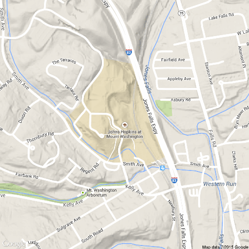
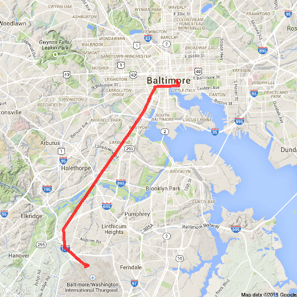

Assignment Objectives
Show some features of ggmap package:
- Mapping
- Geocoding
- Route planner
For more information:
http://journal.r-project.org/archive/2013-1/kahle-wickham.pdf
http://cran.r-project.org/web/packages/ggmap/ggmap.pdf
Jorge Pinheiro
Show some features of ggmap package:
For more information:
http://journal.r-project.org/archive/2013-1/kahle-wickham.pdf
http://cran.r-project.org/web/packages/ggmap/ggmap.pdf
library(ggplot2)
library(ggmap)
## Warning: package 'ggmap' was built under R version 3.1.3
qmap('John Hopkins University, Condado de Baltimore, Maryland', zoom=16)

geocode('John Hopkins University, Condado de Baltimore, Maryland', output="latlona")
## lon lat
## 1 -76.65354 39.36957
## address
## 1 johns hopkins at mount washington, baltimore, md 21209, usa
For more information:
http://code.google.com/apis/maps/documentation/geocoding/
rt <- route(from='BALTIMORE airport, Baltimore, Maryland', to='John Hopkins University, Condado de Baltimore, Maryland',
mode='driving', structure='route')
qmap('Cherry Hill, Condado de Baltimore, Maryland', zoom=12)+
geom_path(aes(x=lon, y=lat), colour='red', alpha=3/4, size=2, data=rt)
## Warning: Removed 7 rows containing missing values (geom_path).

For more information:
https://developers.google.com/maps/documentation/directions/